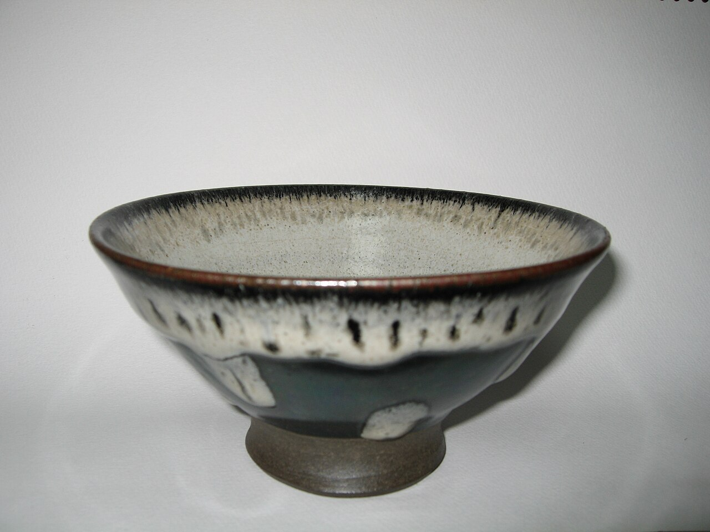
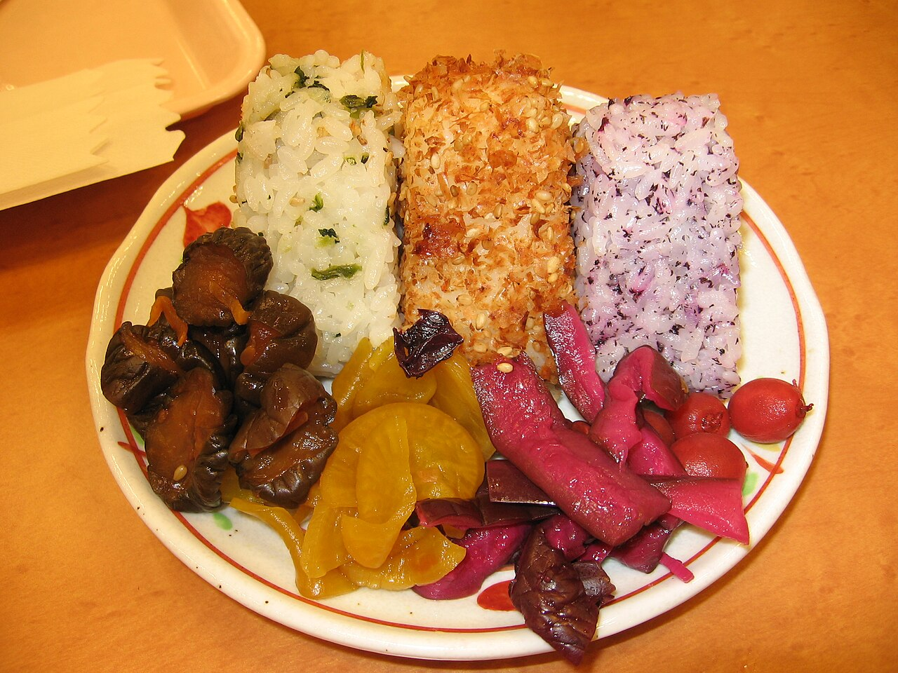
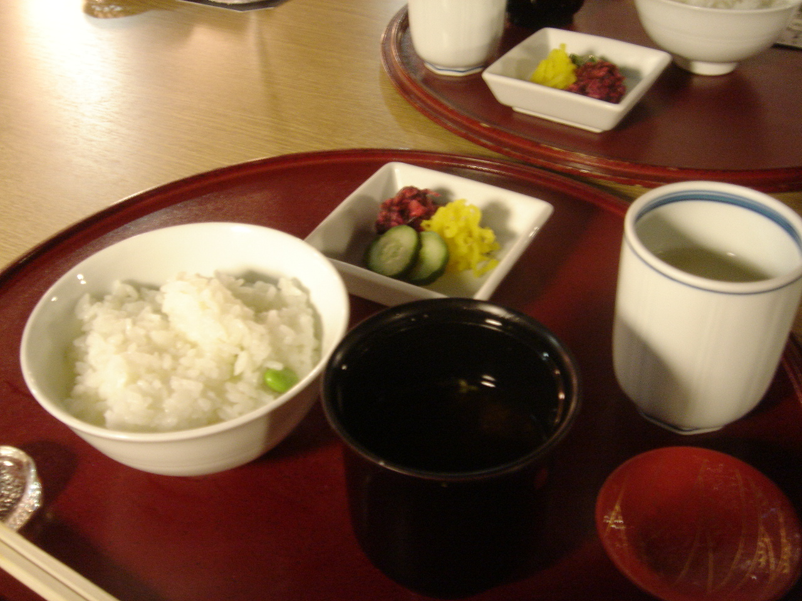

制作側の案を含みます
お店について

このサイトで目指したこと
以下は制作側の案です。お店の理念や店名の由来ではありません。
- 迷わず電話できることどのページからも、電話番号とInstagramにすぐ届くようにしました。
- ごはんの時間が伝わること湯気や器のあたたかさが想像できる写真を選びました。
- わからないことは正直に未確認の情報は作らず、「準備中」としています。
お店の情報
- 店名
- ごはん家さん COCORU
- 所在地
- 北海道北見市北進町3丁目14-24
- 店主・スタッフ
- 準備中(お問い合わせください)
- お店のこだわり
- 準備中(お問い合わせください)
- 営業時間・定休日
- 準備中(お問い合わせください)


掲載写真はフリー素材のイメージで、店舗の実際の様子・料理ではありません。他の地域で撮影されたもの、撮影地が不明なものを含みます。